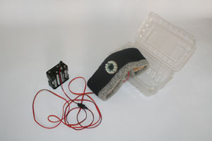

Tokyo F.A.T


"Wow, that's really unfortunate. I remember when he did this before. It's not good for anybody, especially our country." (NY Times).
~Hilary Clinton on Ralph Nader
“I will receive no money from commercial interests or political action groups.” (Meet The Press).
~Ralph Nader
All I’m saying is Nader is back and I’m so excited that I made a T-Shirt. His meet the press interview gave me chills, view it here.


(Let the negative comments begin.)
Saw this on boingboing and made me think it might be a nice FAT/GRL project kind of in the vein of POV Cam – tools for graffiti writers/activists to stay anonymous in the city. This one uses a super bright IR LED array to overwhelm the CCD of the camera. Looks super dorky but the same principle could be applied to under the peak of a baseball cap or through the front of the mesh.

Michael Naimark takes the laser approach, describing in his paper different ways to setup lasers to target a camera. I especially like the idea of cheap laser pointers on mini camera tripods to fix the laser on the target and then just leave it there until the battery runs out. Could also be combined with the soon to be released GRLv powerthief as a way to have it everlasting!
For embedded systems Infra Red Lasers might be a dope solution. The laser would not be visible to the human eye so it would make finding the source quite difficult – yet it would have the same effect on the camera. They can be made quite easily – it is just a matter of removing the IR blocking filter from the laser pointer and replacing it with some Kodak Wratten 87C (or developed film). Anyway thought I would get some ideas going. Lets make some 2008 era, James Bond worthy tools!
“Your voice mailbox is full”……. of advertisers.
[audio:https://fffff.at/audio/er_voice_mail.mp3]

First class mail for first class fffffemales.
The expressions published in this site are all in the public domain. You may enjoy, use, modify, snipe about and republish all F.A.T. media and technologies as you see fit.